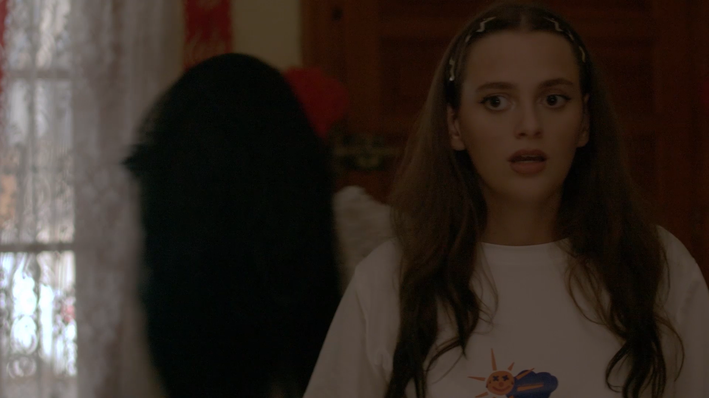
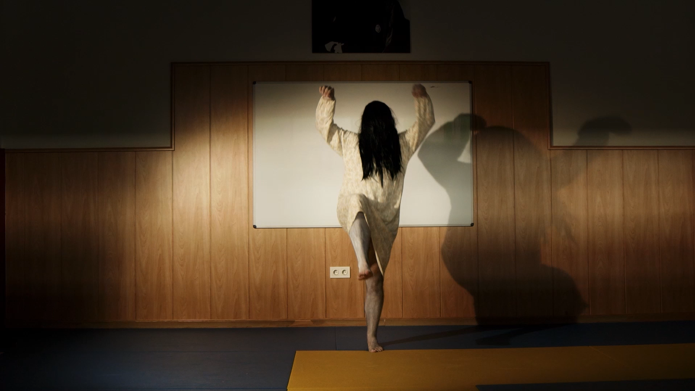

Miley está cansada de ser la rubia tonta de las películas de terror, así que, tras ganar el concurso de kamehameha de Albacete, se va a pasar un fin de semana en una casa de temática japonesa. Allí, un espíritu vengativo, porque alguien se comió su ramen hace 3.000 años, decide poseerla. Ella, harta de tantos monstruos, decide plantarle cara.
"En esta casa pasan cosas... Cosas malignas"
Miley

El fantasma acecha a Miley

Fantasma entrenando para la batalla final